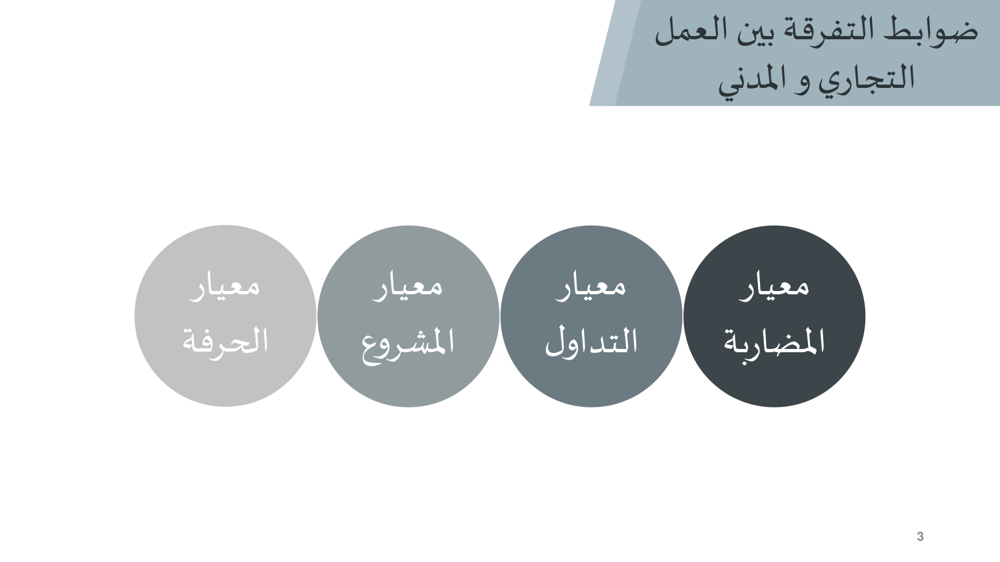
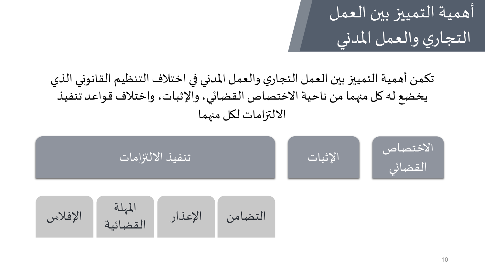

النقاط الأساسية من شرائح الدكتور (18 شريحة). الدكتور قال الاختبار يجي من المحاضرات، فهذي أهم من الكتاب.
المحاضرة الثانية تجاوب على سؤالين. الأول: كيف أفرّق بين العمل التجاري والمدني؟ فيه ٤ معايير (المضاربة، التداول، المشروع، الحرفة)، وكل واحد منها صحيح لكنه ما يكفي لوحده. الثاني: ليش التفريق مهم؟ لأنه يحدد المحكمة المختصة وطريقة الإثبات وقواعد تنفيذ الالتزامات (التضامن، الإعذار، المهلة القضائية، الإفلاس). ركّز على نقد كل معيار، وعلى الفرق بين المدني والتجاري في كل قاعدة.


18 سؤال على هذي المحاضرة. حلّها في بنك الأسئلة — الجواب يطلع لك على طول، وتقدّمك ينحفظ.